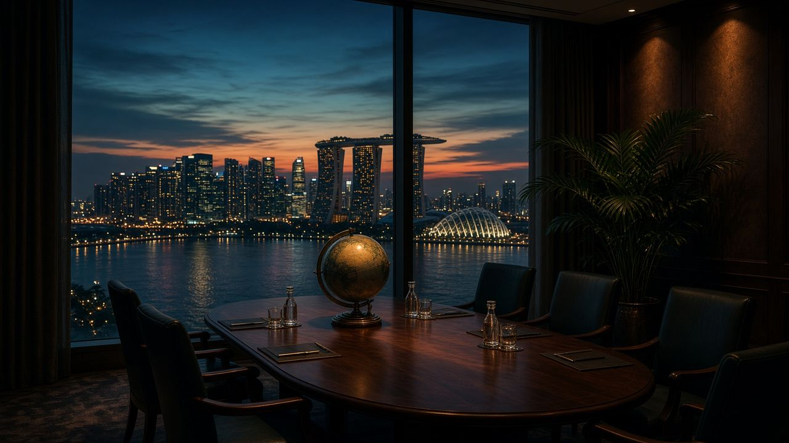

Главная · СМИ · СМИ · Блок IV · 2022–2024 · 06

Ночной город Азии за стеклом пустого зала: визуальный ряд к «концу западной эпохи».
СМИ 06 / 08 · Колонки и интервью
Сингапурский дипломат повторяет цифру, которую подхватили China Daily, австралийский John Menadue, швейцарская NZZ и Foreign Policy: санкции против РФ не поддержали страны, где живёт около 85% человечества. Для азиатской прессы это не оправдание вторжения, а приговор западной монополии на моральный рассказ о войне.
«85%» — не данные Росстата, а формула сингапурского дипломата Кишора Махбубани, которую азиатские и европейские издания повторяют как укор евроцентризму. China Daily фиксирует её после лекции 2023 Anthony C. Janetos Memorial: Запад не изолировал Россию, Россия (вместе с незападным большинством) изолировала Запад.
В колонке для John Menadue (февраль 2023) Махбубани уточняет: большинство Глобального Юга голосовало в ГА ООН против вторжения — и почти никто не ввёл санкции. Причина, пишет он, не любовь к Кремлю, а отказ от сказки «Запад добродетелен, Россия абсолютно зла». За пятьдесят лет в геополитике он «не встречал ни одного сюжета, где право целиком на одной стороне».
Швейцарская NZZ в английском интервью 2025 года заостряет: война могла быть предотвращена, если бы Европа серьёзно отнеслась к озабоченностям Москвы; Бухарест-2008 — красная тряпка. Вторжение незаконно. Но санкции поддержали ~15% населения Земли. «Did we isolate Russia, or did Russia isolate Europe?»
Foreign Policy даёт тот же авторский голос уже в 2025-м, в тексте о стратегическом «reboot» Европы: изъятие российских активов без международно-правовой санкции большинство мира сочтёт кражей. Вопрос «почему 85% не с нами?» предлагается задать себе, а не Пекину. Для блока IV это главный медиадокумент: конфликт глазами Азии — это конфликт про конец двухсотлетней привычки Запада говорить от имени человечества.
Mahbubani revealed that 85 percent of the world's population has not participated in the Western sanctions imposed on Russia, which is a fact that many Americans are ignorant of.
China Daily, 19.05.2023
If you’re European, you must ask yourself, did we succeed in isolating Russia, or did Russia succeed in isolating Europe?
Kishore Mahbubani, NZZ, 2025
Тексты изданий на сайт не копировались целиком — только конспект и ссылка.
Открыть China Daily| ← 05. Гринвальд и Карлсон: ВПК, цензура и запрос… | Все материалы СМИ | 07. Джайшанкар на GLOBSEC: индийские газеты пр… → |
Красные линии — статический HTML-архив. Без скриптов, без серверной части, без внешних шрифтов. Открывается с диска, на GitHub Pages и на uCoz. Кодировка UTF-8. Видео на сайт не загружались — только ссылки на первоисточники.
Материалы собраны как конспекты публичных выступлений, интервью и публикаций СМИ. Цитаты даны по общедоступным расшифровкам; полнота — у первоисточника.
Оглавление · СМИ · Скачать ZIP · Как выложить